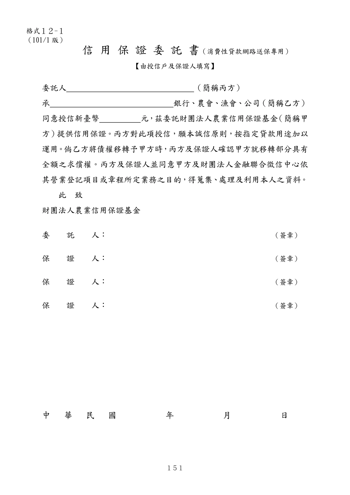

格式 12-1：信用保證委託書（消費性貸款網路送保專用）
手冊頁：151 PDF頁：163／203

查看PDF文字層
下列文字取自PDF既有文字層，僅供搜尋、複製與無障礙輔助。複雜表格的欄列位置可能失真，正式內容請以原頁預覽或PDF為準。
信 用 保 證 委 託 書（消費性貸款網路送保專用） 【由授信戶及保證人填寫】 委託人 （簡稱丙方） 承 銀行、農會、漁會、公司（簡稱乙方） 同意授信新臺幣 元，茲委託財團法人農業信用保證基金 （簡稱甲 方）提供信用保證。丙方對此項授信，願本誠信原則，按指定貸款用途加以 運用。倘乙方將債權移轉予甲方時，丙方及保證人確認甲方就移轉部分具有 全額之求償權。丙方及保證人並同意甲方及財團法人金融聯合徵信中心依 其營業登記項目或章程所定業務之目的，得蒐集、處理及利用本人之資料。 此 致 財團法人農業信用保證基金 委 託 人： （簽章） 保 證 人： （簽章） 保 證 人： （簽章） 保 證 人： （簽章） 中 華 民 國 年 月 日 格式１２-１ （101/1 版）